Memoria Interna
Echeverría Steven, Jami Mateo, Pérez Martín y Zúñiga Sebastián
2026-07-02
1. Más allá de la memoria caché
Arquitectura de Computadores
La memoria principal o Random Access Memory (RAM) es fundamental en el funcionamiento de los computadores
2. Organización de la memoria interna
¿Cómo funciona exactamente una memoria?
- La unidad fundamental de la memoria semiconductora es una celda de memoria. Sus propiedades son:
- Poseen dos estados estables o semiestables que representan el 1 y 0 lógico.
- Al escribir en ellas, es posible fijar su estado.
- Al leerlas, se detecta su estado.
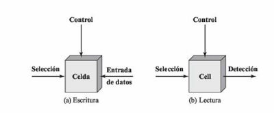
3. DRAM
DRAM (RAM Dinámica)
- Estructura: 1 transistor + 1 condensador.
- Lógica: El bit se almacena como carga eléctrica (naturaleza analógica).
- Reto: El condensador pierde carga rápidamente. Requiere un refresco periódico para no perder los datos.
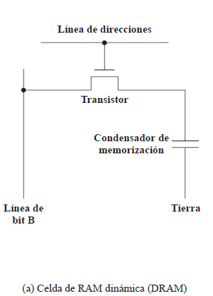
4. SRAM
SRAM (RAM Estática)
- Estructura: 6 transistores configurados como un biestable (Flip-Flop).
- Lógica: Dispositivo puramente digital.
- Ventaja: Mientras haya energía, el dato es estable. No necesita refrescos.
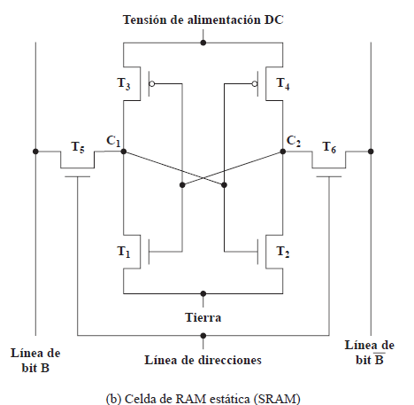
5. DRAM vs SRAM
Comparativa
¿Por qué no usar la memoria más rápida en todo el sistema?
| DRAM (Dinámica) | SRAM (Estática) | |
|---|---|---|
| Densidad | Más Alta | Baja |
| Costo | Más Barata | Costosa |
| Velocidad | Algo más lenta | Rápida |
| Refrescos | Sí (Periódicos) | No (Constante) |
| Uso Ideal | Memoria Principal (RAM) | Memoria Caché (L1/L2) |
6. Memorias ROM
Evolución de las Memorias ROM
- ROM (Máscara): Programada físicamente en fábrica. Imborrable y cero margen de error.
- PROM: Programable por el usuario una sola vez (quemando fusibles internos).
- EPROM: Borrable con luz ultravioleta (tarda hasta 20 minutos y borra todo el chip).
- EEPROM: Borrable eléctricamente a nivel de byte. Flexible, pero costosa y menos densa.
- Flash Memory: Borrable eléctricamente por bloques. Combina la altísima densidad de EPROM con la flexibilidad eléctrica. El estándar actual.
7. Lógica del chip
Estructura de Datos y Matriz
- Procurar que la disposición física de la matriz sea igual a la disposición lógica. La matriz posee \(\color{#bd93f9}{W}\) palabras con \(\color{#bd93f9}{n}\) bits cada una.
- Organizar la memoria mediante la forma un-bit-por-chip, cada chip almacena un solo bit de cada palabra en cada dirección.
Las líneas en una memoria DRAM
- Líneas de direcciones: llegan del procesador y envían señales para activar una celda específica. Requeridas: \(\color{#ffb86c}{\log_2(W)}\).
- Líneas de datos: esenciales para operaciones de escritura y lectura.
- Líneas horizontales: (líneas de palabras), activan toda una fila de bits.
- Líneas verticales: (líneas de bits), transportan el voltaje del bit que se va a escribir, o bien reciben el bit que se ha leído.
Proceso de lectura y escritura
- Matriz compuesta por 4 matrices cuadradas de \(\color{#ffb86c}{2048 \cdot 2048}\) elementos.
- Celdas acopladas a líneas horizontales (selección) y verticales (Entrada-Datos/Detección).
- Se leen o escriben cuatro bits a la vez: se activan filas y se leen 4 columnas indicadas por el decodificador.
- Para la lectura: se pasa cada línea por un amplificador de lectura.
- Para la escritura: se activa cada línea a 1 o 0 según líneas de datos.
Multiplexación y Refresco en DRAM
- Multiplexación en el tiempo:permite usar 11 líneas en lugar de 22:
- Once señales de dirección para filas.
- Luego las mismas líneas para columnas.
- Refresco: evita pérdida de bits en DRAM. Técnica:
- Inhabilitar todas las celdas.
- Contador recorre celdas, pasa bit al decodificador de filas y activa RAS.
- Datos se leen y escriben nuevamente.
8. Encapsulación del chip
Encapsulación del Chip
Memoria EPROMs:
- Esta memoria sí permite borrar sus datos guardados.
- Una EPROM encapsulada de 8 Mb posee un millón de palabras, cada una de 8 bits.
-
Se requiere de 32 terminales para almacenar dichas palabras, cada una con las siguientes funciones:
- La dirección de la palabra a la que se accede.
- Número total de terminales de direcciones: \(n=\log_2(W)=20\).
- El dato a leer (ocho líneas).
- Línea de alimentación del chip \(V_{CC}\).
- Un terminal de tierra \(V_{SS}\).
- Habilitación del chip (CE).
- Una tensión de programación \(V_{PP}\).
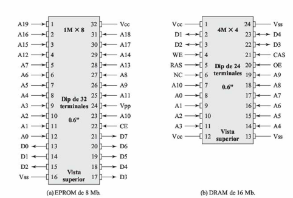
9. Organización en módulos
Memoria RAM de 256 KB

Memoria RAM de 1 MB
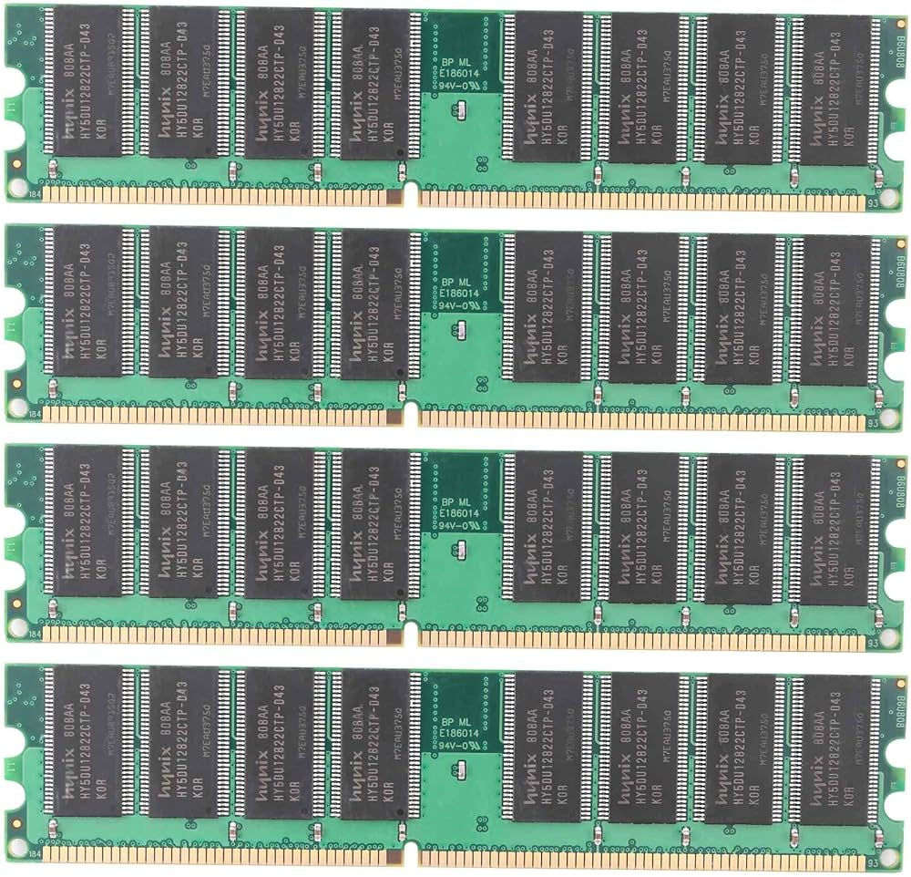
10. Correccion de Errores y código de Hamming
Hard Error vs Soft Error
Los sistemas de memoria están sujetos a fallos. Se dividen en dos familias principales:
Un defecto permanente en el hardware. Celdas que conmutan de manera errónea o que se quedan atascadas en 0 o 1.
→ Causas: Desgaste, defectos de fábrica, daño eléctrico o térmico.
→ Solución: Irreversible. Hay que reemplazar el chip.
Un evento aleatorio y no destructivo. Uno o más bits son alterados, pero el chip sigue siendo funcional.
→ Causas: Ruido eléctrico, emisión radiactiva (partículas alfa).
→ Solución: Corregible. Si se detecta, se pueden volver a escribir los bits correctos.
Control de Errores en Memoria
Para lidiar con los errores, se implementan lógicas de detección y corrección en el flujo de lectura y escritura de la memoria.
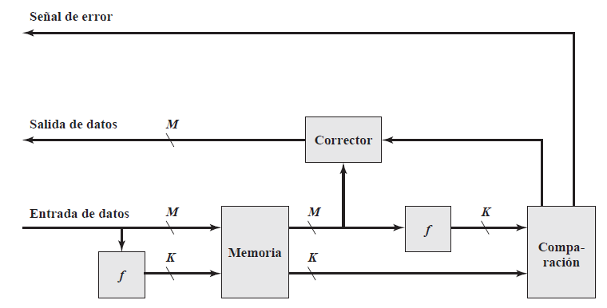
Código de Hamming: Concepto General
Para corregir un Soft Error, no basta con saber que ocurrió un error, tenemos que saber exactamente dónde ocurrió.
- La idea: Añadir bits de comprobación a nuestros datos.
- Richard Hamming descubrió que ubicando estos guardianes en posiciones que son potencias de 2, podemos generar un código matemático infalible.
- El cruce de información (intersección en los diagramas de Venn) delata matemáticamente al bit dañado.
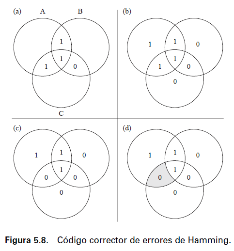
Código de Hamming: Bits de comprobación
Para que el hardware pueda corregir un error, los bits de comprobación deben ser capaces de identificar:
- Cada una de las posibles posiciones donde puede ocurrir un error.
- El caso en que no exista ningún error.
Si una palabra contiene:
- \(M\) bits de datos
- \(k\) bits de comprobación
entonces existen \((M+k)\) posibles posiciones de error y un caso adicional de "sin error".
Los \(k\) bits de comprobación generan \(2^k\) combinaciones posibles, por lo que debe cumplirse:
Código de Hamming: Ejemplos
Aplicando la condición \(2^{k}-1 \ge M+k\) obtenemos:
| Datos (\(M\)) | Bits de comprobación (\(k\)) | Palabra final | Incremento |
|---|---|---|---|
| 4 | 3 | 7 | 75% |
| 8 | 4 | 12 | 50% |
| 16 | 5 | 21 | 31.25% |
| 32 | 6 | 38 | 18.75% |
| 64 | 7 | 71 | 10.94% |
Código de Hamming: Aplicación al ejemplo
Nuestro ejemplo utiliza una palabra de \(M=4\) bits. Probamos distintos valores de \(k\).
\(2^{2}-1=3\)
\(3 < 4+2=6\)
No es suficiente
\(2^{3}-1=7\)
\(7 = 4+3=7\)
Sí cumple
Generación de la palabra (Paso 1)
1. Datos a enviar (4 bits):1101 (D4, D3, D2, D1) 2. Posiciones: Metemos los datos dejando libres las potencias de 2 para los bits de comprobación (C1, C2, C4).
7 (111)
6 (110)
5 (101)
4 (100)
3 (011)
2 (010)
1 (001)
3. Cálculo de los bits de comprobación (\(C_i\) tal que \(\sum i = n\)):
- C1 \(= D1(3) \oplus D2(5) \oplus D4(7) = 1 \oplus 0 \oplus 1 = 0 \implies\) C1 = 0
- C2 \(= D1(3) \oplus D3(6) \oplus D4(7) = 1 \oplus 1 \oplus 1 = 1 \implies\) C2 = 1
- C4 \(= D2(5) \oplus D3(6) \oplus D4(7) = 0 \oplus 1 \oplus 1 = 0 \implies\) C4 = 0
Mensaje final transmitido hacia la memoria:
Error y Corrección (Paso 2)
1 a 0.
Palabra dañada leída por el procesador:
7
6
5
4
3
2
1
4. Detección del error: El hardware recalcula los bits de comprobacion.
- C1 \(= D1(3) \oplus D2(5) \oplus D4(7) = 1 \oplus 0 \oplus 1 =\) 0
- C2 \(= D1(3) \oplus D3(6) \oplus D4(7) = 1 \oplus\) 0 \(\oplus 1 =\) 0
- C4 \(= D2(5) \oplus D3(6) \oplus D4(7) = 0 \oplus\) 0 \(\oplus 1 =\) 1
Palabra de síndrome (Paso 3)
5. Comparación de los bits de comprobación Los bits recalculados se comparan con los almacenados mediante una operación XOR.
| C4 | C2 | C1 |
|---|---|---|
| 0 | 1 | 0 |
| ⊕ | ⊕ | ⊕ |
| 1 | 0 | 0 |
| 1 | 1 | 0 |
La comparación genera la palabra de síndrome:
Por lo tanto, el hardware identifica que el error se encuentra en la posición 6 e invierte el bit en dicha posición.
11. DRAM Síncrona (SDRAM)
El Problema de la Latencia
- Modo de Ráfagas (Burst Mode): Extrae secuencias de datos a gran velocidad en la misma fila para evitar configurar direcciones repetitivamente.
- Registro de Modo: Programa la longitud de ráfaga (1, 2, 4, 8 bits o página) y la latencia.
- Bancos Múltiples: Diseño dividido para procesar operaciones en paralelo.
Arquitectura Interna SDRAM
- Contador de Ráfagas y Control: Gestionan la inicialización en flancos ascendentes.
- Empaquetado de Datos: Se realiza automáticamente tras la latencia configurada.
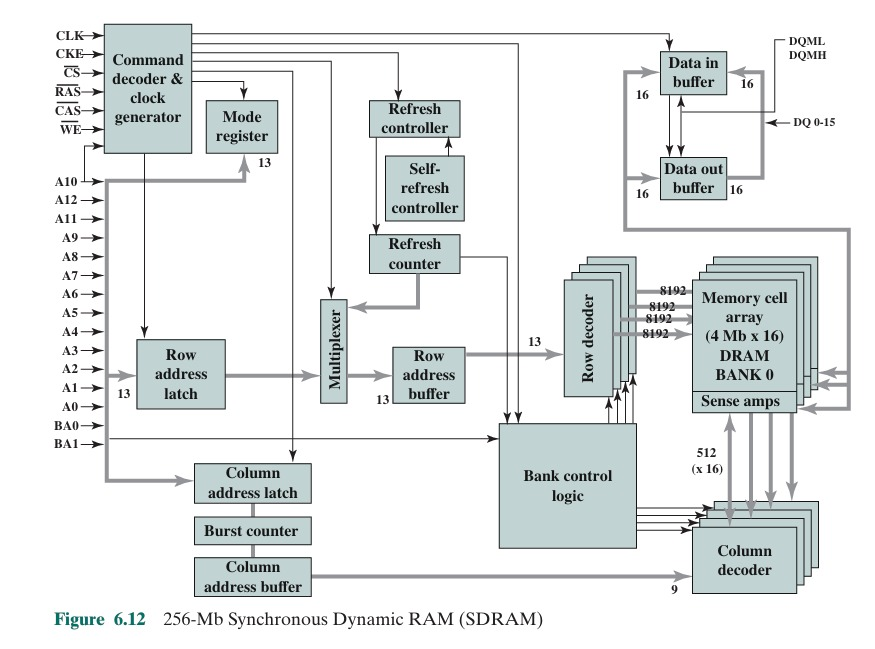
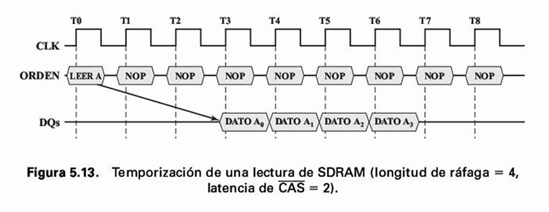
12. DDR SDRAM
Fundamentos DDR
- DDR1: Prefetch de 2 bits (velocidad 2x frente al núcleo).
- DDR2: Prefetch de 4 bits (velocidad 4x).
- DDR3: Prefetch de 8 bits (velocidad 8x).
- DDR4: Mantiene prefetch de 8 bits pero introduce Bank Groups (Grupos de bancos) para operar columnas en paralelo y alcanzar tasas de 2133 a 4266 Mbps.
Evolución de Generaciones
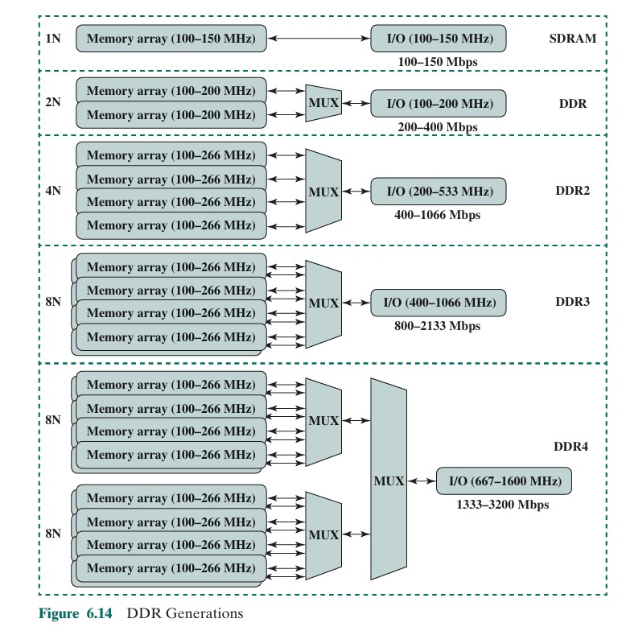
13. EDRAM (Embedded DRAM)
Características de EDRAM
14. Implementaciones modernas
Implementaciones Modernas
- IBM z13: Uso masivo compartido (Caché L3 de 64 MB por CPU y Caché L4 compartida de 480 MB).
- Intel Core (Original): Diseñada como caché L4 tradicional ("victim cache" de L3) con dependencias directas.
- Intel Core (Actual): Actúa como un Búfer Transparente directamente en el controlador de memoria. Acelera gráficos y PCIe sin pasar por el CPU.
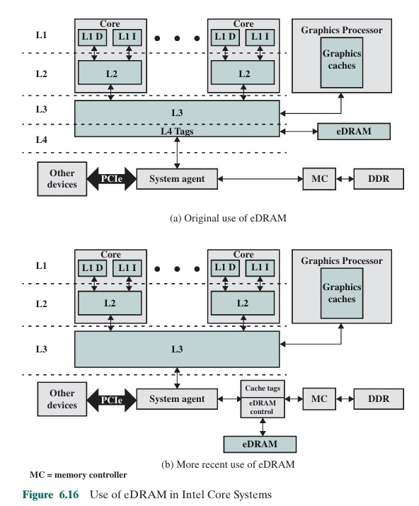
15. Memoria Flash
Principios de Operación
Estado '1' = Vacía.
Estado '0' = Electrones atrapados al aplicar alto voltaje (escritura).
- No volátil, borrado eléctrico por grandes bloques ("flashes").
- NOR Flash: Conexión en paralelo. Acceso aleatorio de alta velocidad por byte. Ideal para sistemas embebidos y ejecutar código.
- NAND Flash: Transistores en serie (16-32). Acceso por bloques. Densidad colosal, domina almacenamiento (SSDs, USBs).
Topología NOR vs NAND
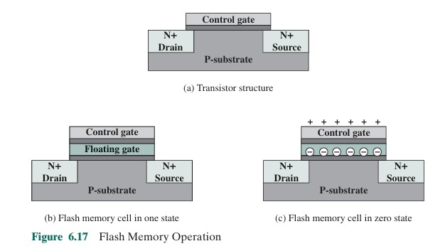
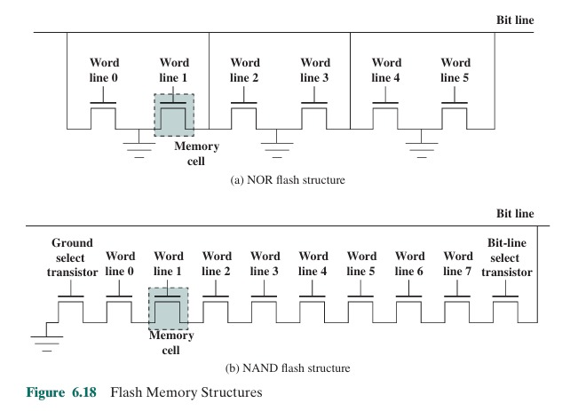
16. Memoria Flash (Flash Memory)
Origen y Evolución
- Evolucionó combinando lo mejor de dos tecnologías anteriores:
- (EPROM): Eran memorias que se borraban exponiéndolas a luz ultravioleta, lo cual era lentísimo y requería sacar el chip de la placa.
- (EEPROM): Memorias más modernas que ya se borraban con electricidad, pero lo hacían byte por byte, de forma muy lenta.
- La memoria Flash tomó la ventaja de borrado eléctrico de la EEPROM, pero lo hace a gran velocidad y en "bloques" enteros.
- Además, usa solo un transistor por bit, logrando una alta densidad.
¿Cómo guarda y borra los datos físicamente?
- Estado Inicial (1 lógico): La caja fuerte está vacía. La electricidad pasa libremente.
- Guardar datos (0 lógico): Voltaje fuerte empuja electrones a cruzar el aislamiento (tunneling). Los electrones quedan atrapados de forma no volátil.
- Lectura: Un circuito externo revisa si el transistor deja pasar corriente.
- Borrado: Voltaje alto en dirección opuesta saca los electrones de golpe. Limpia bloques completos a la vez.
Tipos de Flash Memory
- Conexión: Celdas organizadas en paralelo.
- Ventaja: Acceso aleatorio rapidísimo a nivel de byte. Lee instrucciones directamente.
- Aplicación: Código de arranque (firmware) en microcontroladores y sistemas embebidos.
- Conexión: Celdas en serie (cadenas de 16-32 transistores).
- Ventaja: Ocupan menos espacio físico. Muy baratas y capacidad gigantesca.
- Limitación: Obligada a leer/escribir en bloques/páginas. Sin acceso aleatorio directo.
- Aplicación: Almacenamiento masivo (USBs, SDs, SSDs).
17. Nuevas Tecnologías de Memoria Sólida No Volátil
El Límite Físico Actual
- Estas nuevas tecnologías buscan el "santo grial":
- Combinar la velocidad extrema de la memoria RAM.
- Con la no volatilidad de no perder los datos al apagarse.
STT-RAM (Spin-Transfer Torque RAM)
- ¿Cómo funciona? Tiene una "Unión de Túnel Magnético" con una capa fija y una capa libre.
- Paralelas: Electricidad pasa fácil (baja resistencia = 0).
- Antiparalelas: Cuesta pasar (alta resistencia = 1). Se cambia la capa libre con corriente directa.
- Fuertes: Rapidísima (<10 ns), altísima durabilidad (>\(10^{15}\) ciclos) y cero consumo en standby.
PCRAM (Phase-Change RAM)
- ¿Cómo funciona? Cambia el estado físico del material usando pulsos de calor:
- Estado Cristalino (SET): Ordenado, deja pasar corriente (calentando un poco).
- Estado Amorfo (RESET): Desordenado, bloquea la corriente (con chispazo fuerte y enfriamiento rápido).
- Fuertes: Estabilidad física suprema, retiene información a largo plazo de forma segura.
ReRAM / RRAM (Resistive RAM)
- ¿Cómo funciona? Aplicando voltaje, se crean filamentos conductores en el óxido:
- Baja resistencia: Filamentos creados, la corriente pasa (1 o 0).
- Alta resistencia: Aplicando voltaje inverso, los filamentos se rompen.
- Fuertes: Muy bajo voltaje (ahorro de energía), larga duración, tamaño celular microscópico teórico para tarjetas gigantescas.
Tabla Comparativa
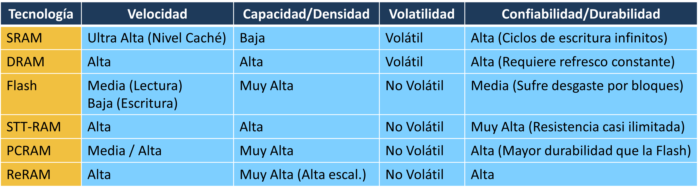
Conclusión del Desarrollo Tecnológico
Fin de la Presentación
¿Preguntas?
¡Gracias por su atención!
Bibliografía: William Stallings, Antonio Cañas Vargas y Alberto Prieto Espinosa. Organización y arquitectura de computadores. Pearson Educación, 2006.